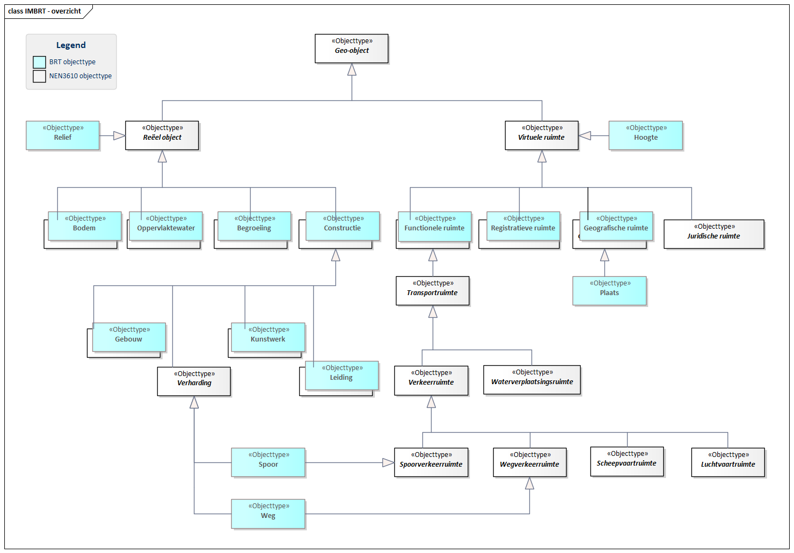
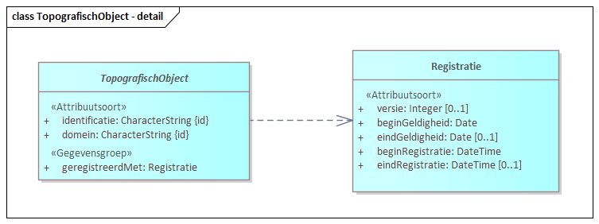

Dit document is de BRT Catalogus en geeft een beschrijving van de Basisregistratie Topografie (BRT).
Status van dit document
Dit is een definitief concept van de nieuwe versie van dit document. Wijzigingen naar aanleiding van consultaties zijn doorgevoerd.
1. Inleiding
De Basisregistratie Topografie (BRT) is de landelijke verzameling van digitale, topografische producten van heel Nederland op verschillende schaalniveaus. De BRT staat ook wel bekend als TOPNL-kaarten. De BRT is kosteloos beschikbaar als open data. Het Kadaster is houder van de BRT. Het Ministerie van Volkshuisvesting en Ruimtelijke Ordening (VRO) is het verantwoordelijke ministerie.
Dit document, de BRT Catalogus, is bestemd voor de gebruikers van de BRT en bevat beschrijvingen van de verschillende topografische dataproducten en kaartproducten.
Deze en andere informatie is te vinden op de Kadaster-website van de BRT: https://www.kadaster.nl/zakelijk/registraties/basisregistraties/brt
Historische Context
Op 18 februari 1815 werd het Topographisch Bureau opgericht. Later ging het Bureau verder onder de naam Topografische Dienst en werd het onderdeel van het Ministerie van Defensie. De vanaf het begin gemaakte analoge kaarten, ook wel bekend als stafkaarten, dienden voor de oriëntatie en begaanbaarheid van wegen en terreinen van personeel en materieel van het leger. In 1992 is begonnen met het digitaliseren van de analoge kaarten. Hierbij is gestart met schaal 1:10.000: TOP10Vector. De topografische kaarten werden steeds meer van algemeen nut en in 2004 ging de Topografische Dienst samen met het Kadaster. Defensie werd een van de gebruikers, de verantwoordelijkheid ging toen over naar het Ministerie van Volkshuisvesting en Ruimtelijke Ordening. TOP10vector is in 2007 vervangen door een nieuw objectgericht vectorbestand: TOP10NL. Vanaf 1 januari 2008 fungeert TOP10NL samen met de andere kaartschalen als de Basisregistratie Topografie (BRT). Dit is versie 1.0 en na wijzigingen vanaf 2015 als versie 1.2 van de BRT.
Met de komst van de Basisregistratie Adressen en Gebouwen (BAG) en Basisregistratie Grootschalige Topografie (BGT) ontstonden registraties op grotere schalen die verplicht gebruikt moeten worden. De BRT won voor een deel dezelfde data in. Dit is als overheid niet kostenefficiënt en vanuit de BRT is onderzocht of de BRT niet beter hergebruik kan maken van de informatie uit de BAG en BGT. De uitkomst was dat dit kon en dat daardoor de inwinning voor de BRT door het Kadaster een stuk minder wordt. Een deel van de inwinning door het Kadaster blijft, omdat de BRT rijker van informatie is dan de BAG en BGT. In 2020 is gestart met het uitdenken en vervolgens implementeren van een afleidingsproces om vanuit de BAG, BGT en een stuk Kadaster inwinning de nieuwe BRT te kunnen maken. Vanaf 2026 wordt de nieuwe BRT, versie 2.0, geleverd conform de specificaties uit dit document.
De ervaringen uit verschillende gebruikerssessies en consultatie zijn de afgelopen periode gebruikt bij het samenstellen van een nieuw informatiemodel voor de BRT. Het is belangrijk om te beseffen dat de datamodellen van de BAG en de BGT hiervoor het uitgangspunt zijn. Daar waar mogelijk is de inhoud daarvan 1-op-1 overgenomen. Daarnaast is ieder object en iedere eigenschap uit het informatiemodel van TOP10NL geanalyseerd, vergeleken met de andere basisregistraties en vanuit meerdere aspecten bekeken. Is het bijvoorbeeld topografie, cartografie of informatie, wat is het gebruik en het bijhoud-proces van dit object of deze eigenschap. Op basis van deze analyse is voor ieder object en iedere eigenschap één van onderstaande keuzes gemaakt in het nieuwe informatiemodel:
Harmoniseren vanwege andere registratie (BGT, BAG, "SOR", …)
Behouden in BRT
Op een andere manier opnemen in BRT
Vervallen, want werd (nog) niet bijgehouden in de BRT
Vervallen, want niet (meer) relevant voor de nieuwe BRT-producten (bv. niet op kaart)
Vervallen, want niet passend bij BRT
Toegevoegd aan BRT
Samen met Geonovum is het nieuwe informatiemodel voor de BRT in drie rondes geconsulteerd. De samenvatting van deze consultatie en een document met alle wijzigingen ten opzichte van versie 1.2 zijn terug te vinden op: https://geonovum.github.io/brt-next-cv/#wijzigingsvoorstel-brt-next
Na deze consultaties zijn er nog wijzigingen in het BRT Informatiemodel doorgevoerd, welke besproken zijn in het BRT Gebruikersoverleg.
Een actueel overzicht van de verschillen tussen versie 2.0 van het BRT informatiemodel en het informatiemodel TOP10NL 1.2.0 wordt weergegeven in de bijlage van de BRT Praktijkhandleiding.
2. De BRT basisregistratie
Dit hoofdstuk bevat de algemene beschrijving en context van de BRT.
2.1 BRT productfamilie
De Basisregistratie Topografie (BRT) is een verzameling van topografische producten op verschillende schaalniveau's. Dit zijn:
Kadaster eigen inwinning bronbestand als uitbreiding op informatie uit de BAG en BGT
Het informatieproduct 1:10k (2.), de verschillende kaartproducten (3.) en de BRT achtergrondkaart (4.) komen voort uit een geautomatiseerd assemblageproces waarbij de bronnen BAG, BGT en eigen inwinning worden gecombineerd tot een landsdekkend beeld. Het assembleren is een proces van allerlei algoritmen dat zorgt voor de kleinschalige producten op de verschillende schaalniveau's. De historie wordt opgeslagen als een versie van het gehele product, bijvoorbeeld op 1 september 2026 is een nieuwe versie gemaakt.
Het assemblageproces wordt weergegeven in het volgende diagram. De bronnen die getoond worden zijn verder verschreven in 2.2 BRT bronnen.
1. Kadaster eigen inwinning bronbestand als uitbreiding op informatie uit de BAG en BGT
De BRT is rijker van informatie dan de BAG en BGT. Om de BRT te kunnen maken is daardoor een stuk eigen inwinning van data nodig. Dit geeft geen landsdekkend beeld, dit zijn plukjes informatie van een specifiek aantal objecten.
Voor de eigen inwinning maakt het Kadaster gebruik van data van derden en luchtfoto's. De jaarlijkse opname van de luchtfoto's en de verwerking hiervan voor de BRT eigen inwinning bepaalt de actualiteit van de BRT.
De topografische objecten uit de eigen inwinning zijn voorzien van object-ID's en historie.
2. Informatieproduct 1:10k
Het informatieproduct 1:10k is geschikt voor data-analytics en data-science, omdat de geometrie niet gewijzigd wordt en de topologie correct aanwezig is (bv. spoor-, vaar- en verkeerswegen lopen door).
Dit informatieproduct heeft willekeurige en betekenisloze object-ID's. Deze worden bij assemblage van elke nieuwe versie van de 1:10k opnieuw gemaakt. De objecten hebben geen verwijzingen naar de oorspronkelijke bron-ID's. Hier is bewust voor gekozen omdat de object-ID's in de oorspronkelijke bronnen staan. Koppelingen dienen gelegd te worden op de echte bronnen in plaats van de afgeleide data. In het informatieproduct 1:10k is wel per object beschikbaar of het object is afgeleid uit de BAG en/of BGT en/of een andere registratie en/of eigen inwinning (zonder verwijzing naar de individuele object-ID's). Aan elk object hangt het tijdstip van assemblage zodat bij het gebruik van 2 versies van de 1:10k bestanden duidelijk is welk object wanneer is geassembleerd.
Het informatieproduct 1:10k wordt geleverd in twee varianten:
Voor de kleinere kaartschalen wordt de data aangepast om te komen tot een kaartbeeld dat de meest optimale cartografische weergave geeft. De cartografische weergave hoeft niet geometrisch en/of topologisch correct te zijn. De weergave is enkel en alleen gericht op het kaartbeeld. Hierdoor zijn de kaartproducten niet geschikt voor data-analytics en data-science. Het dient als (achtergrond-)kaart waarbij de gebruiker op basis van de features kan visualiseren. De gebruiker visualiseert hierbij wel een kaartproduct en dit kan bijvoorbeeld betekenen dat bij het visualiseren van wegen deze niet altijd netjes doorlopen. De kaartproducten hebben geen object-ID's. Aan elk object hangt het tijdstip van assemblage zodat dit bij het gebruik van 2 versies van de kaartproducten duidelijk is welk object wanneer is geassembleerd.
De kaartproducten 1:25k, 1:50k, 1:100k, 1:250k, 1:500k, 1:1.000k worden geleverd in twee varianten:
Als gevisualiseerd rasterbestand: TOP25raster, TOP50raster, TOP100raster, TOP250raster, TOP500raster en TOP1000raster
Als kaartproduct: TOP50NL, TOP100NL, TOP250NL, TOP500NL en TOP1000NL
4. BRT achtergrondkaart
De BRT achtergrondkaart wordt apart genoemd, omdat deze een andere opzet heeft dan de kaartproducten per schaal. De BRT achtergrondkaart is een gedetailleerde basiskaart op meerdere schaalniveau's. Afhankelijk van het zoomniveau wordt bepaalde informatie getoond.
2.2 BRT bronnen
De BRT wordt afgeleid uit de volgende bronnen:
De basisregistraties BGT, BAG en BRK
De registraties NWB en AHN
Data van derden
Eigen inwinning
In het document wordt gesproken over de BGT, BAG en eigen inwinning. Dit zijn de belangrijkste bronnen en vullen het grootste deel van de brondata in. Daarnaast worden ook nog de volgende andere bronnen gebruikt:
De BRK, voor de bestuurlijke gebieden (gemeente- en provinciegrenzen)
Het NWB, voor infrastructuur en wegennetwerken
Het AHN, om de hoogtelijnen en schaduwering uit af te leiden
Data van derden. Welke data van derden is gebruikt voor welke topografische objecten zal worden opgenomen in de BRT Praktijkhandleiding.
2.3 Stelsel van basisregistraties
De BRT is een van de 10 basisregistraties die de overheid heeft. De BRT is per 1 januari 2008 een basisregistratie. Een van de eigenschappen van basisregistraties is dat elke overheidsorganisatie deze verplicht moet gebruiken. De BRT is hierdoor verplichtend als kaartondergrond voor de overheid. Doordat de BRT open data is, zien we dat het gebruik van de BRT ook groot is bij niet-overheden. Deze hebben geen verplicht gebruik.
De topografische gegevens worden beschikbaar gesteld onder een CC-BY licentie. Dit betekent dat:
De gebruiker de gegevens mag kopiëren, verspreiden en doorgeven
De gebruiker afgeleide producten mag maken
Gebruik voor commerciële doeleinden toegestaan is
Bij hergebruik of verspreiding de naam van het Kadaster wordt vermeld, op een manier die redelijk is in verhouding tot het gebruikte medium
Het Kadaster zijn intellectuele eigendomsrechten (o.a. databankenrecht) blijft voorbehouden
Daarnaast moet er rekening mee gehouden worden dat alleen de gegevens die rechtstreeks uit de Basisregistratie afkomstig zijn, gelden als authentieke gegevens in de zin van de Kadasterwet.
3. Ontwerpprincipes
In dit hoofdstuk zijn de algemene uitgangspunten en ontwerpprincipes die gelden voor de verschillende BRT-producten uitgewerkt.
3.1 Metamodel
Het informatiemodel voor de Basisregistratie Topografie (BRT) is opgebouwd volgens het MIM - Metamodel Informatie Modellering.
Een metamodel is een model van een model.
Het definieert een verzameling van modelleerconstructies in de vorm van bouwstenen, oftewel modelelementen zoals een objecttype, relatiesoort en attribuutsoort, met bijbehorende betekenis en met bijbehorende afspraken omtrent hoe deze toe te passen.
Hiermee kan vervolgens een informatiemodel gemaakt worden.
Het toepassen van een gestandaardiseerd metamodel draagt bij aan de consistentie, herbruikbaarheid en begrijpelijkheid van het model.
3.1.1 Gebruik van het informatiemodel
Een speerpunt van MIM is het modelgedreven kunnen werken; dit biedt diverse voordelen:
Efficiëntie: Dankzij de machine-leesbare specificatie van de structuur en betekenis van informatie kunnen technische representaties gegenereerd worden waarmee dubbel werk vorkomen wordt.
Kwaliteitsbewaking: Het model fungeert als een formeel kader dat helpt om fouten en inconsistenties in de dataopslag en verwerking te minimaliseren.
Flexibiliteit: Aanpassingen aan het model kunnen gecontroleerd worden doorgevoerd.
Interoperabiliteit: Het model maakt integratie met andere (basis)registraties systemen eenvoudiger, omdat de modellen dezelfde taal hanteren.
Het informatiemodel dient binnen de BRT als:
Naslagwerk: Het model dient als referentie voor gebruikers die inzicht willen krijgen in de structuur en semantiek van de BRT-gegevens.
Basis voor technische artefacten: Het model is machine-leesbaar, dankzij gestandaardiseerde vertaalregels kunnen technische specificaties worden gegenereerd, zoals databaseschema's, API-specificaties en uitwisselingsformaten (bijvoorbeeld GML en JSON). Dit zorgt voor consistente gegevensverwerking. Door modelgedreven te werken, wordt uniformiteit in de verwerking en interpretatie van gegevens gewaarborgd.
Het informatiemodel vormt een essentieel fundament voor een eenduidige, efficiënte en interoperabele gegevensverwerking en uitwisseling.
Met modelgedreven werken, wordt niet alleen de kwaliteit en consistentie van de registratie gewaarborgd, maar wordt ook de technische implementatie en integratie met andere systemen vereenvoudigd.
3.1.2 Opbouw van het informatiemodel
Het informatiemodel is een formele beschrijving van de objecten, relaties en attributen die binnen de Basisregistratie Topografie worden gebruikt.
Het volledige model is beschreven in de specificatie in hoofdstuk 4. Informatiemodel BRT.
Het informatiemodel is opgebouwd uit verschillende domeinen die samen zorgen voor een gestructureerde en beheersbare inrichting van de gegevens.
Deze domeinen zijn niet willekeurig gekozen, maar vormen logische eenheden die het beheer en de toepassing van het model vereenvoudigen.
De modelelementen zijn als volgt gegroepeerd:
Domein Topografie
Dit is het belangrijkste domein binnen het informatiemodel.
Het bevat alle modelelementen die direct betrekking hebben op topografische gegevens, zoals objecten, relaties en attributen die geografische informatie beschrijven.
Domein Datatypen algemeen
Dit domein bevat generieke datatypen die niet specifiek zijn voor topografie, maar wel essentieel zijn voor het modelleren van gegevens binnen het informatiemodel.
Voorbeelden zijn standaardtypen zoals tekst, getallen, datums en booleans.
Domein Metadata
Het metadata-domein omvat modelelementen die informatie geven over de gegevens zelf, zoals herkomst, actualiteit, kwaliteit en beheerinformatie.
Metadata is cruciaal voor het interpreteren en gebruiken van de gegevens.
Het domein Topografie vormt hierin de kern, terwijl de andere domeinen ondersteunend zijn aan de beschrijving en het beheer van de topografische gegevens.
3.2 Relatie BRT Catalogus met artikel 98a Kadasterwet
In artikel 98a van de Kadasterwet zijn de geografische objecten vermeld. De BRT dient deze geografische objecten met hun cartografische weergave te bevatten. De opsomming van geografische objecten in artikel 98a Kadasterwet is gebaseerd op een verouderde versie van NEN3610 namelijk versie NEN3610:2011. Intussen heeft de [NEN3610] een nieuwere versie: NEN3610:2022.
De NEN3610 is een standaard die op de 'Pas toe of leg uit'-lijst (https://www.forumstandaardisatie.nl/open-standaarden/geo-standaarden) staat van het forum standaardisatie. Om uniform en consistent te blijven met de landelijke, ook door andere (basis)registraties, gehanteerde standaarden zoals NEN3610 en te voldoen aan de 'Pas toe of leg uit'-lijst is het van belang om de laatste versie van NEN3610 te ondersteunen. Dit is verwerkt in deze BRT Catalogus.
Dit betekent dat de 'naamgeving' van de geografische objecten in de BRT wordt aangepast aan de nieuwe versie van NEN3610 (versie: 2022), maar deze nieuwe naamgeving verandert het 'wezen' of de inhoud van de BRT niet. De BRT blijft dezelfde authentieke geografische objecten bevatten, als bedoeld in artikel 7f, derde lid, Kadasterwet.
Hieronder de kruistabel van de geografische objecten zoals ze in de BRT waren genoemd en in deze versie van de BRT zijn geworden op basis van NEN3610:2022.
Was
Wordt
a. wegdeel
Weg
b. spoorbaandeel
Spoor
c. waterdeel
Oppervlaktewater
d. bebouwing
Gebouw
e. terrein
Begroeiing, Bodem
f. inrichtingselement
Begroeiing, Constructie, Kunstwerk, Leiding
g. reliëf
Hoogte, Reliëf
h. registratief gebied
Registratieve Ruimte
i. geografisch gebied
Geografische Ruimte, Plaats
j. functioneel gebied
Functionele Ruimte
Het toepassen van NEN3610 gaat verder dan het bepalen van naamgeving van objectypes.
We gaan verder in op de toepassing van het semantisch model van de NEN3610, en richtlijnen omtrent identificaties en registratiegegevens in 3.9 Identificaties en tijdstippen.
3.3 Semantisch model
Het semantisch model van NEN3610 vormt de basis voor het structureren en betekenis geven aan gegevens.
Het beschrijft welke soorten objecten we onderscheiden in de werkelijkheid.
De toepassing van deze semantische klassen uit de NEN3610 biedt een duidelijke en uniforme classificatie van objecten in de fysieke wereld.
Het toepassen van een gedeeld kader bevordert interoperabiliteit en juiste interpretatie van de gegevens in de BRT.
Binnen de BRT worden de volgende semantische klassen toegepast als objecttypen in het informatiemodel:
Begroeiing
Bodem
Constructie
Functionele Ruimte
Gebouw
Geografische Ruimte
Kunstwerk
Leiding
Oppervlaktewater
Registratieve Ruimte
Verharding / Spoorverkeersruimte
Verharding / Wegverkeersruimte
Een volledig overzicht van de toegepaste objecttypen is visueel weergegeven in 4.1.1 Model.
3.4 Gebiedsaanduiding
De BRT beslaat het gehele Nederlandse grondgebied, met uitzondering van de Caribische eilanden Bonaire, Sint Eustatius en Saba (BES-eilanden).
3.5 Actualiteit
Bij het maken van een nieuwe versie van de BRT-producten wordt het assemblageproces gebruikt. Het assemblageproces gebruikt actuele data van de gebruikte bronnen BGT, BAG, BRK, NWB, AHN en eigen inwinning. De gebruikte bronnen hebben een actualiteit die binnen de gestelde BRT-actualiteit van maximaal 2 jaar ligt. De eigen inwinning zal ook voldoen aan de BRT-actualiteitseisen van 2 jaar.
3.6 Ruimtelijk referentiesysteem, coördinatenstelsel in GIS-applicaties
Horizontaal coördinatenstelsel
Projectie systeem: RijksDriehoekstelsel (RD-stelsel)
Projectie: Stereografische projectie voor Nederland (Dubbel projectie van Schreiber)
Horizontaal datum: Rijksdriehoeksmeting
Ellipsoïde: Bessel 1841 (a = 6377397,155, 1/f = 299,1528128)
Projectie centrum: 52:09:22.178 d:m:s & 5:23:15.500 d:m:s
Coördinaatverschuiving: X: 155000 m & Y: 463000 m
Coördinaten worden in het RD-stelsel gegeven in meters, met drie decimalen.
Verticaal coördinatenstelsel
De hoogtegegevens zijn aangegeven in meters ten opzichte van NAP (Normaal Amsterdams Peil).
Bij de objectklasse hoogte wordt middels het attribuut "Referentievlak" aangegeven ten opzichte van welk referentievlak de hoogte gegeven wordt.
Coördinatenstelsel in GIS-applicaties
In GIS-applicaties worden EPSG (European Petroleum Survey Group) codes gebruik om het gebruikte coördinaatsysteem mee aan te duiden. Het voor de BRT gebruikte coördinatenstelsel is RD_new / EPSG 28992.
3.7 Kwaliteit
Kwaliteitscontrole
De in de wet bedoelde externe kwaliteitscontrole wordt eens in de drie jaar uitgevoerd door een externe organisatie. De kwaliteitsbeoordeling moet worden gemaakt volgens de ISO 19114 standaard. De uitkomsten van deze controle heeft het Kadaster aan het Ministerie van VRO gerapporteerd en worden gepubliceerd op de BRT website Kadaster en in de Staatscourant.
3.8 Metadata
De metadata van de verschillende BRT-producten is te vinden in het Nationaal Georegister .
3.9 Identificaties en tijdstippen
Voor het uniek identificeren van objecten binnen NEN3610 worden twee kerngegevens gebruikt: «identificatie» en «domein».
Deze gegevens samen zorgen voor een globaal unieke, functionele, identificatie van de objecten.
In de producten van Basisregistratie Topografie (BRT) wordt niet gewerkt met persistente identificaties die een geo-object gedurende zijn hele levenscyclus uniek en onveranderlijk identificeren.
Dit betekent dat voor eenzelfde geo-object in de werkelijkheid, zoals een gebouw of weg, over de tijd heen verschillende identificaties kunnen worden toegekend zonder dat er expliciete relaties tussen deze identificaties worden vastgelegd.
Voor analyse van gegevens over verschillende versies heen kan worden teruggevallen op de geografische referentie (geo-referentie) van de objecten.
Echter, vinden dergelijke analyses (waar temporele kenmerken relevant zijn), bij voorkeur plaats op basis van de bronnen die de BRT hanteert, zoals de BAG of BGT.
Zo worden identificaties voor geassembleerde topografische objecten gegenereerd op basis van een UUID als «identificatie» en een referentie tot de betreffende productlevering als «domein».
NEN3610-2022 schrijft het gebruik van metadata voor om de herkomst, levenscyclus en context van informatie te beschrijven.
Hierbij worden twee tijdlijnen toegepast: tijdlijn geldigheid en tijdlijn registratie
Deze tijdlijnen zijn noodzakelijk voor het beheren en interpreteren van gegevens, omdat deze informatie de temporele context biedt. Dit is essentieel voor registratieve systemen waar een hoge mate van temporele accuraatheid noodzakelijk is.
Dit is bijvoorbeeld het geval bij de BAG en de BGT, maar ook voor de eigen inwinning van de BRT.
Voor overige producten van de BRT, die periodiek en als geheel gepubliceerd worden op basis van geldige informatie uit bronregistraties van een bepaalde peildatum, komen deze tijdlijnen minder aan de orde omdat deze gelijk zijn voor alle gegevens in een levering van dat product.
Zo wordt voor geassembleerde topografische objecten een assemblagetijdstip gekozen als «tijdstipRegistratie».
Voor de 'eigen inwinning' wordt historie conform de daartoe gestelde regels ingericht en zijn identificaties duurzaam gedurende de levenscyclus van het betreffende object.
3.10 Namen
In het topografisch domein worden verschillende objecten voorzien van een naam. Dit kan een letterlijke waarde betreffen maar in bepaalde gevallen worden er verschillende kenmerken van die naam beschreven. Dit is noodzakelijk voor de duiding van die naam en/of ten behoeve van de presentatie ervan op de kaart.
Hierdoor zijn namen in deze gevallen een onderwerp van gesprek; en zo ook als objecttype gemodelleerd.
Dit is het geval voor Weg, Oppervlaktewater, Registratieve ruimte, Geografische ruimte en Plaats. Voor de andere objecttypen waar namen beschreven zijn; maar waar geen kenmerken van die namen vastgelegd worden; is de naam als attribuut gemodelleerd.
Zie onderstaande tabel voor de objecten waar dit van toepassing is.
Objecttype
Naam
Taal
Herkomst
Officieel
Weg
x
x
Spoor
x
Oppervlaktewater
x
x
x
x
Gebouw
x
Begroeiing
x
Bodem
x
Constructie
x
Kunstwerk
x
Leiding
x
Hoogte
Reliëf
Registratieve Ruimte
x
x
x
x
Geografische Ruimte
x
x
Plaats
x
x
x
x
Functionele Ruimte
x
Deze benadering, waarin een naam als een op zichzelf staand object wordt beschouwd, is gebaseerd op internationale standaarden.
Bijvoorbeeld de manier waarop in UN/CEFACT, en zo ook DCAT, identificaties gemodelleerd zijn. Een voorbeeld dat dichter bij «Naam» komt is SKOS Simple Knowledge Organization System eXtension for Labels (SKOS-XL), waar, op dezelfde wijze, lexicale labels als object gemodelleerd worden om zo een nadere beschrijving van die lexicale labels te kunnen bieden.
SKOS-XL is tevens de herkomst van de modelelementen die gebruikt worden in het deze specificatie.
4. Informatiemodel BRT
Dit hoofdstuk bevat het informatiemodel dat als basis dient voor de verschillende BRT-producten.
4.1 Gegevensdefinitie
4.1.1 Model

IMBRT - overzicht
Dit diagram laat zien welke objecttypen in de BRT zijn opgenomen (blauw) en hoe deze zich verhouden tot de basisdefinities uit de NEN3610 (wit). Waar blauw en wit overlappen, gebruikt de BRT de betekenis uit de NEN3610. Nieuwe objecttypen, zoals «Plaats», zijn ondergebracht binnen bestaande categorieën, bijvoorbeeld «Geografische ruimte».
4.1.2 Domein Topografie
Topografie - overzicht
4.1.2.1 Objecttypen
TopografischObject

Naam
TopografischObject
Herkomst
BRT
Definitie
Een topografisch object is een object in het landschap.
Herkomst definitie
BRT
Datum opname
10-04-2025
Unieke aanduiding
identificatie + domein
Toelichting
Topografische objecten zijn zichtbaar op een topografische kaart.
De identificatie van een versie van een informatieobject. Deze versie identificatie is alleen uniek voor versies binnen de context van 1 informatieobject.
Planten die op natuurlijke wijze zijn ontstaan of door mensen zijn aangeplant.
Herkomst definitie
NEN3610-2022
Datum opname
10-04-2025
Toelichting
Begroeiing kan dus spontaan of natuurlijk zijn (vegetatie), maar ook door menselijk toedoen tot stand zijn gekomen (aanplant of beplanting) of combinaties daarvan.
Bovenste deel van de aarde, exclusief oppervlaktewater.
Herkomst definitie
NEN3610-2022
Datum opname
10-04-2025
Toelichting
Bodem verwijst naar een typering en/of benoeming van het aardoppervlak, waarbij de bodem doorloopt onder het oppervlaktewater. Bodem omvat ook de daaronder liggende bodemmaterialen met indelingen die kunnen verschillen per vakgebied zoals bijvoorbeeld bodemkunde, geologie, geohydrologie en geomorfologie.
Een functionele ruimte wordt gebruikt om een (gebruiks)functie aan een ruimte toe te kennen. Het functionele gebruik van de ruimte volgt niet altijd de fysieke begrenzing van reële objecten.
Overdekte en geheel of gedeeltelijk met wanden omsloten constructie bedoeld voor het in een afgeschermde omgeving onderbrengen van mensen, dieren of voorwerpen of voor de productie van goederen.
Ruimte die bekendstaat onder een vanuit de historie of het gebruik bekende benaming of een fysisch-geografische samenhang, al dan niet met zijn omgeving, kent.
Herkomst definitie
NEN3610-2022
Datum opname
10-04-2025
Toelichting
De grenzen zijn niet altijd exact vastgesteld. Voorbeelden zijn: Noordoostpolder, Midden-Nederland, rivierengebied, Veluwe, Zuid-Limburg, kustgebied.
Civiel-technische constructie voor de infrastructuur van wegen, water, spoorbanen, waterkeringen en/of leidingen.
Herkomst definitie
NEN3610-2022
Datum opname
10-04-2025
Toelichting
Hieronder vallen overbruggingen, waterstaatkundige werken en waterkerende constructies. Overbruggingen kunnen zijn: brug, viaduct, aquaduct enz. Een voorbeeld van een waterstaatkundig werk is een sluis. Voorbeelden van waterkerende constructies zijn stuw en vaste dam.
Op basis van wet- of regelgeving afgebakende ruimte die als eenheid geldt van politiek-bestuurlijke verantwoordelijkheid of voor bedrijfsvoering.
Herkomst definitie
NEN3610-2022
Datum opname
10-04-2025
Toelichting
Registratieve ruimte omvat objecten die onder de wet- of regelgeving vallen of die voor bedrijfsvoering administratief van belang zijn. In veel gevallen zal een dergelijk gebied ook een registratieve aanduiding of registratief nummer hebben. Voorbeelden zijn: gemeente Delft, postcodegebied 2345, politieregio Haaglanden, veiligheidsregio Gelderland-Midden, Nationaal Park De Hoge Veluwe, kadastraal perceel.
Kleinste functioneel onafhankelijk stukje spoor met gelijkblijvende, homogene eigenschappen en relaties dat er binnen een spoorwegnet wordt onderscheiden.
Kleinste functioneel onafhankelijk stukje weg met gelijkblijvende, homogene eigenschappen en relaties voor wegverkeer en vliegverkeer te land.
Herkomst definitie
BRT
Datum opname
10-04-2025
Toelichting
Hieronder wordt het gehele weglichaam begrepen (incl. rijstroken, trottoirs, boomspiegels, vluchtheuvels, etc.). Weg, water en terrein vormen samen een sluitend landsdekkend geheel.
Identificatie is de identificatiecode die een object heeft binnen een registratie of binnen een ketenproces voor data-uitwisseling. Binnen de registratie of de data-uitwisseling is het object uniek identificeerbaar. In combinatie met het attribuut domein wordt een object hiermee uniek identificeerbaar op het niveau van verschillende registraties, uitwisselprocessen en ook wereldwijd uniek.
Een naam is een mensleesbare term ter aanduiding van iets.
«Naam» is een speciaal objecttype van woorden die gebruikt worden om iets aan te duiden, zoals een plaats. Het is een zelfstandig object met eigen attributen.
Herkomst definitie
NL-SBB
Datum opname
10-04-2025
Unieke aanduiding
identificatie
Toelichting
Een «Naam» heeft één vaste tekstvorm. Deze tekstvorm is een eenvoudige tekst (een reeks letters en tekens) met eventueel een taalaanduiding, zoals "Nederlands". De eigenschap «waarde» wordt gebruikt om deze tekst van een «Naam» te beschrijven.
Waardelijst is een samengesteld datatype voor het weergeven van een gegeven binnen een extern beheerde referentielijst.
4.1.4.3 Gegevensgroeptypen
Gegevensgroep Registratie
Naam
Registratie
Herkomst
NEN3610
Definitie
Vastlegging van een versie van een set gegevens.
Datum opname
10-04-2025
Toelichting
Bij het registreren van een object als informatieobject horen een aantal metadata die hier betrekking op hebben, zoals versie en registratie van tijdlijngegevens.
De identificatie van een versie van een informatieobject. Deze versie identificatie is alleen uniek voor versies binnen de context van 1 informatieobject.
De identificatie van een versie van een informatieobject. Deze versie identificatie is alleen uniek voor versies binnen de context van 1 informatieobject.
Wanneer deze waarde niet is ingevuld, is de versie nog actueel.
Indicatie afleidbaar
Nee
Mogelijk geen waarde
Nee
Indicatie identificerend
Nee
Relatiesoort isGebasseerdOp van gegevensgroeptype
Naam
isGebasseerdOp
Herkomst
BRT
Definitie
De databron voor deze registratie.
Herkomst definitie
BRT
Kardinaliteit
1 .. *
Mogelijk geen waarde
Nee
5. Dataset: Eigen inwinning
De BRT wordt zoals gesteld in 2.2 BRT bronnen uit verschillende bronnen afgeleid. Een van die bronnen is de eigen inwinning, omdat de andere bronnen alleen niet de informatierijkheid geven die de BRT nodig heeft.
5.1 Overzicht eigen inwinning Kadaster
Het Kadaster maakt de nieuwe BRT zo veel mogelijk vanuit bestaande bronnen, zoals de BAG en de BGT, en vult deze bronnen aan waar nodig. Het aanvullen kan onderverdeeld worden in drie verschillende processen:
aanvulling op registraties
inwinnen aanvullende attribuutinformatie
inwinnen van object- en attribuutinformatie
Al deze ingewonnen informatie valt onder de noemer 'Eigen inwinning Kadaster'. Hieronder wordt het inwinnen van aanvullende informatie die nodig is voor de BRT verstaan. De verschillende typen inwinning worden in de volgende paragrafen uitgewerkt.
5.1.1 Eigen inwinning: aanvulling op registraties
In dit proces worden objecttypen bijgehouden die nog niet of niet volledig in de gebruikte bronnen aanwezig zijn.
Bij het initieel samenstellen van de nieuwe BRT zijn ook gegevens uit de laatste levering van de 'oude' TOP10NL (informatiemodel versie 1.2.0) gebruikt. Deze gegevens zijn een aanvulling ten opzichte van de gebruikte bronnen en worden bijgehouden door het Kadaster. Wanneer zo'n object ook gaat voorkomen in een van de gebruikte registraties, komt de eigen inwinning voor dit object te vervallen.
Voorbeelden van dit soort gegevens zijn:
Gebouwen uit TOP10NL (1.2.0) die niet in de BAG en BGT voorkomen
Wegen en paden in bosgebieden die niet in de BGT voorkomen
Constructies 'hek' die niet volledig in de BGT voorkomen
Voor deze gegevens heeft het Kadaster een terugmeldplicht. Als deze gegevens verplicht in een andere registratie moeten voorkomen, dan zullen deze objecten teruggemeld worden bij de desbetreffende registratie.
Dit type inwinning zal op termijn uitgefaseerd worden, zodra de terugmeldingen zijn verwerkt.
5.1.2 Eigen inwinning: aanvullende attribuutinformatie
De informatierijkheid van het BRT-model is groter dan dat van de gebruikte bronnen. De objecten uit de gebruikte bronregistraties zullen daarom aangevuld moeten worden vanuit eigen inwinning. Hiervoor maken we zo veel als mogelijk gebruik van externe bronnen.
Als voorbeeld kan van een objecttype de geometrie afkomstig zijn uit de BGT, attribuut 1 uit het NWB komen en attributen 2 en 3 uit eigen inwinning komen.
Voorbeelden van dit soort gegevens zijn:
Wegenclassificatie is uitgebreider dan de BGT (bv. hoofdweg en straat)
Wegnamen gekoppeld aan de objecten
Gebouwtypering en functie
Een compleet overzicht van de gebruikte bronnen wordt weergegeven in de BRT Praktijkhandleiding.
5.1.3 Eigen inwinning: object- en attribuutinformatie
Er zijn ook objecttypen die we geometrisch èn administratief inwinnen. Hiervoor wint het Kadaster het object volledig in.
Voorbeelden van dit soort gegevens zijn:
Getijdegebied (droogvallende gronden)
De objecttypen Geografische Ruimte en Functionele Ruimte
Een compleet overzicht van de gebruikte bronnen wordt weergegeven in de BRT Praktijkhandleiding.
5.2 Proces inwinning
Waar mogelijk wordt gebruik gemaakt informatie uit Basisregistraties en/of externe bronnen. Er zijn echter gegevens die niet afgeleid kunnen worden uit een andere Basisregistratie of een externe bron. In sommige gevallen is eigen inwinning nodig.
Deze eigen inwinning kent een thematische benadering. De wijze en frequentie van inwinnen hangen af van het objecttype en/of het attribuut.
6. Assemblageproces BRT-producten
Dit hoofdstuk beschrijft het proces van het assembleren van de verschillende BRT-producten.
6.1 Proces assemblage
Op basis van de gegevens die op schaalniveau 1:1.000 zijn ingewonnen, worden door middel van het generaliseren van gegevens producten gemaakt met een kleiner schaalniveau. Het assemblageproces bestaat onder andere uit het elimineren, combineren en simplificeren van gegevens.
6.2 Generalisatietabel BRT-producten
Voor elk objecttype per kaartproduct is in een tabel aangegeven of deze wel of niet voorkomt in de kaart. Ook is daarbij aangegeven in welke geometrische verschijningsvorm deze dan afgebeeld wordt in de kaart. Het kan voorkomen dat een objecttype in het geheel niet voorkomt op de kaart.
Een voorbeeld: Een weg van het objecttype "straat" wordt afgebeeld als vlak op de producten TOP10 en TOP25, afgebeeld als lijn op het product TOP100 en niet afgebeeld op de producten TOP250, TOP500 en TOP1000.
Dit hoofdstuk bevat het informatiemodel voor TOP10NL.
Het model voor informatieproduct TOP10NL is een toepassing van het BRT model zoals beschreven in hoofdstuk 4. Informatiemodel BRT.
Het BRT model bestaat uit drie domeinen 1) Topografie 2) datatypen algemeen en 3) metadata.
Domein 1) en 2) worden volledig toegepast maar vanwege de aard van het informatieproduct TOP10NL wordt maar een gedeelte van domein 3) metadata toegepast.
Dit volgt met name uit de gehanteerde 3. Ontwerpprincipes. Het verschil met het BRT model is gepresenteerd in de volgende sectie (7.1 View Metadata).
De mim serialisatie (de machineleesbare variant) van het informatiemodel voor TOP10NL is gepubliceerd onder de volgende url.
Zoals beschreven in 3.1.1 Gebruik van het informatiemodel vormt dit de basis voor technische artefacten.
7.1 View Metadata
Op het vlak van metadata is het voornaamste verschil dat voor TOP10NL alleen een registratieve tijdlijn wordt toegepast.
Vanwege het gehanteerde proces ook alleen het begintijdstip registratie.
Er worden in principe geen concrete uitlatingen gedaan over de geldigheid van de data.
Wel is de brondata op de peildatum die gebruikt is geldig.
Op moment van publicatie, na assemblage, kan het zijn dat de brondata reeds verouderd is.
TOP10NL is daarom ook geen authentieke bron van deze gegevens.
Dit geeft aan dat de tekst bijvoorbeeld een naam, soortnaam, wegnummer, afritnummer,
afritnaam, knooppuntnaam, brugnaam, tunnelnaam, sluisnaam, nummer, hoogte, ... is.
De kaartproducten worden ook geleverd als gevisualiseerd rasterbestand: TOP25raster, TOP50raster, TOP100raster, TOP250raster, TOP500raster en TOP1000raster.
9. Kaartproduct: BRT achtergrondkaart
De BRT achtergrondkaart is een gedetailleerde basiskaart op meerdere schaalniveau's gemaakt vanuit de BRT. De BRT achtergrondkaart heeft als doel om een rustige achtergrond te bieden voor verschillende viewers en websites die organisaties kunnen combineren met hun eigen data.
De BRT wordt gebruikt in allerlei CAD- en GIS-software en op het web. Om dit gebruik eenvoudig te maken is het belangrijk om standaarden te hanteren die door de gangbare software standaard wordt ondersteund. Dit faciliteert het Kadaster door aan te sluiten op de standaarden van het Open Geospatial Consortium (OGC), zie https://www.ogc.org/
Voor de verschillende BRT producten zijn de volgende OGC-formaten en -services gekozen.
BRT product
OGC GeoPackage
OGC API Feature
OGC Vector Tiles
OGC GeoTIFF
OGC WMS
OGC WMTS
Dataset eigen inwinning
X
X
Informatieproduct 1:10k
X
X
X
X
X
X
Kaartproducten 1:25k-1:1000k
X
X
X
X
BRT achtergrondkaart
X
X
Met OGC GeoPackage wordt een SQL-container gevuld om in op te slaan of uit te bevragen. Met OGC API Features kunnen objecten via een service bevraagd worden inclusief alle objectinformatie. Vector Tiles zijn geschikt om met vector data hoge performance te halen voor grote bestanden. OGC GeoTIFF is een rasterformaat dat nog veel wordt ondersteund. Met de WMTS service kunnen tiles snel bevraagd worden. Alle bovenstaande formaten en services zijn te verkrijgen via www.pdok.nl.
11. Conformiteit
Naast onderdelen die als niet normatief gemarkeerd zijn, zijn ook alle diagrammen, voorbeelden, en noten in dit document niet normatief. Verder is alles in dit document normatief.